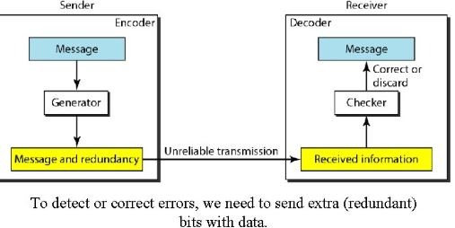

## <h3>Capitulo 10: Deteccion y correcion de errores</h3> <section> <h4></h4> <h4>Rafael Bello Rangel</h4> <h5>Maestro: Tuxter</h5> <h5>Materia: Telecomunicaciones</h5> </section> --- ## Tipo de --- ## Deteccion vs correcion <p style="font-size: 80%;"> La detección de errores es un proceso más sencillo que la corrección. En la detección, solo buscamos saber si ha ocurrido algún error, lo cual se puede responder con un simple "sí" o "no", sin importar la cantidad de errores. Un error de un solo bit se trata de la misma manera que un error de ráfaga</p> <p style="font-size: 80%;">Por otro lado, la corrección de errores es más compleja, ya que necesitamos identificar tanto el número de bits corruptos como su ubicación en el mensaje. La cantidad de errores y el tamaño del mensaje son factores clave; por ejemplo, al corregir un solo error en una unidad de datos de 8 bits, debemos considerar ocho posibles ubicaciones. Si hay dos errores, las posibilidades aumentan a 28. Esto se vuelve aún más complicado si se intentan localizar múltiples errores en unidades de datos más grandes.</p> --- ## Redundancia <p>Consiste en enviar bits adicionales junto con los datos, los cuales son añadidos por el emisor y eliminados por el receptor. Estos bits redundantes permiten al receptor identificar o corregir bits corruptos</p> --- ## Correcion de errores en avance vs Correcion por retransmision <p>La corrección de errores hacia adelante es un proceso en el que el receptor intenta adivinar el mensaje utilizando los bits redundantes, lo cual es posible si el número de errores es pequeño</p> <p>La corrección por retransmisión es una técnica en la que el receptor detecta un error y solicita al emisor que reenvíe el mensaje. Este proceso de reenvío se repite hasta que el receptor considera que ha recibido un mensaje libre de errores, aunque no todos los errores pueden ser detectados</p> --- ## Codificacion <p>La codificación introduce redundancia mediante esquemas que crean relaciones entre bits redundantes y bits de datos. Esto permite al receptor detectar o corregir errores al verificar estas relaciones. Los esquemas de codificación se dividen en dos categorías principales: codificación en bloques y codificación por convolución, con un enfoque particular en la codificación en bloques</p> --- ## Estructura de Codificacion y decodificacion  --- ## Aritmetica Modular y Modulo-2 <p>La aritmética modular es un concepto fundamental en la informática, especialmente en la detección y corrección de errores. En esta aritmética, se utiliza un rango limitado de enteros definidos por un límite superior, llamado módulo N, Solo se consideran enteros de 0 a N-1. Por ejemplo, con un módulo de 12, solo se utilizan los números del 0 al 11</p> <p>La aritmética módulo-2 es de particular interés, ya que utiliza un módulo N, Nde 2, lo que significa que solo se emplean los números 0 y 1. Las operaciones en esta aritmética son muy simples.</p> --- ##